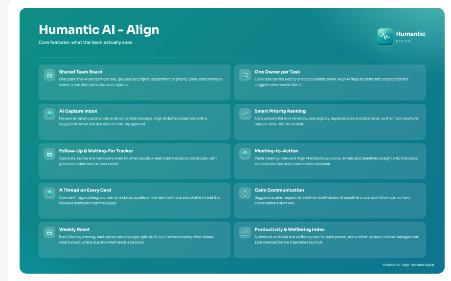

App snippets
Screens from Humantic AI - Align, with illustrative sample data.
Teams that move together.Aligned by agentic AI.
Productivity · Alignment · AccountabilityHumantic AI - Align gives leaders one live view of what matters. Every request, owner and deadline sits on a shared board, the AI captures what is asked and flags what is slipping, and accountability stays clear without chasing.
Alongside delivery, the wellbeing index and productivity metrics sit side by side, so leaders see both the work and the people doing it. Priorities, waiting items and workload stay visible, and early signals show who is stretched before pressure becomes burnout.
Because the two grow together, protecting wellbeing protects performance and the return on investing in people. Calm communication, weekly resets and anonymous pulse checks keep teams steady, and early signals can point people to employee assistance support when it helps most. That is how top talent finds every reason to stay.



Illustrative example. All names and figures are sample data.